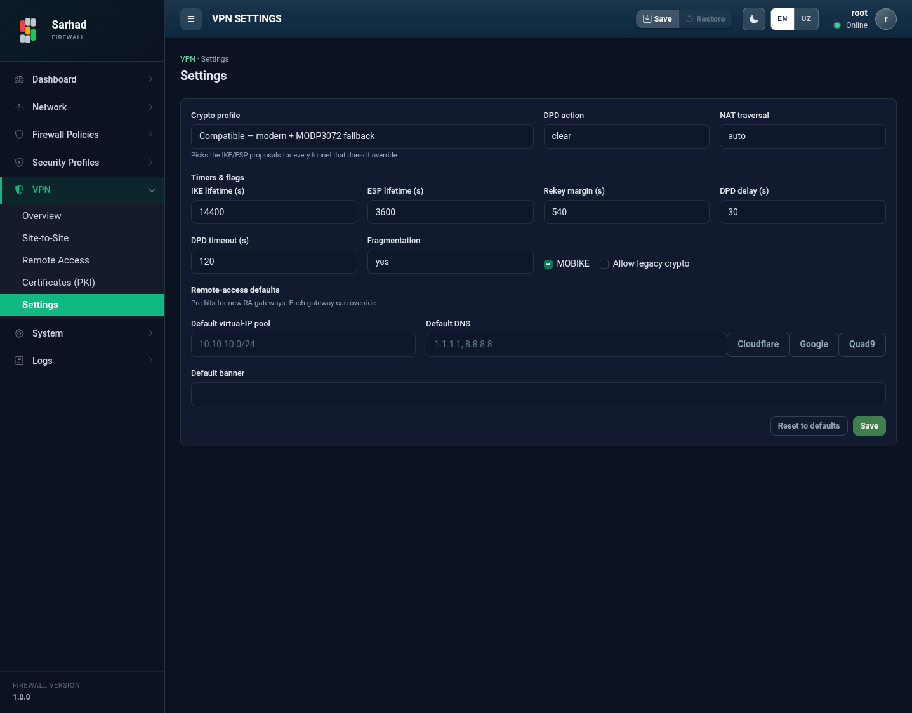

5. VPN umumiy sozlamalari (Settings)
Bu sahifa barcha VPN ulanishlariga (Remote Access va Site-to-Site) standart
qiymat sifatida qo’llaniladigan global parametrlarni boshqaradi. Alohida
gateway yoki tunnel bu qiymatlarni o’zining sozlamalari bilan almashtirishi
mumkin. Bu bo’limga o’tish uchun chap menyudan VPN → Settings bo’limini
tanlang (/vpn/settings).
{kind=link}

5.1. Shifrlash to’plami (Crypto profile)
Crypto profile har bir tunnel uchun standart IKE va ESP proposal’larini tanlaydi:
Profil |
Tavsifi |
|---|---|
Modern |
Faqat zamonaviy algoritmlar: AES-256-GCM, ECP384. Eng xavfsiz, lekin peer ham zamonaviy bo’lishini talab qiladi. |
Compatible |
Zamonaviy algoritmlar + MODP3072 zaxira varianti. Ko’pchilik qurilmalar bilan mos. |
Legacy |
Eskirgan algoritmlar (3DES, SHA1, MODP1024). Xavfsiz emas — faqat yangilab bo’lmaydigan eski uskunalar uchun. |
Custom |
IKE va ESP proposal’larini hamda vaqtlarni qo’lda kiritish. |
Custom rejimida IKE proposal (autentifikatsiya bosqichi) va ESP
proposal (ma’lumotni shifrlash bosqichi) ni vergul bilan ajratib kiritasiz
(masalan, aes256gcm16-prfsha384-ecp384).
5.2. Vaqt va bayroqlar (Timers & flags)
Sozlama |
Tavsifi |
|---|---|
IKE lifetime (s) |
IKE SA (boshqaruv kanali) amal qilish muddati. Standart: |
ESP lifetime (s) |
Child SA (ma’lumot tunneli) amal qilish muddati. Standart: |
Rekey margin (s) |
Kalit muddat tugashidan necha sekund oldin yangilanishi. Standart:
|
DPD delay (s) |
Dead Peer Detection — peer’ni tekshirish oralig’i. Standart: |
DPD timeout (s) |
Peer javob bermasa, uni “o’lik” deb hisoblash vaqti. Standart: |
DPD action |
Peer javob bermaganda nima qilish: |
NAT traversal (NAT-T) |
NAT ortidagi peer’lar uchun UDP 4500 inkapsulyatsiyasi: |
Fragmentation |
IKE paketlarini bo’laklash: |
MOBIKE |
Mijoz IP manzili o’zgarganda (masalan, Wi-Fi’dan mobil internetga) ulanishni uzmasdan davom ettirish (RFC 4555). Mobil mijozlar uchun foydali. |
Allow legacy crypto |
Eskirgan zaif algoritmlarga ruxsat berish. Standart holatda o’chirilgan (tavsiya etiladi). |
5.3. Remote Access standart qiymatlari
Bu maydonlar yangi RA gateway yaratishda avtomatik to’ldiriladi (har bir gateway ularni o’zgartirishi mumkin):
Default virtual-IP pool — RA mijozlariga beriladigan IP diapazoni (masalan,
10.10.10.0/24).Default DNS — mijozlarga beriladigan DNS manzillari.
Default banner — mijozga autentifikatsiyadan oldin ko’rsatiladigan xabar (masalan, foydalanish siyosati).
5.4. Saqlash
Save — o’zgarishlarni saqlaydi va kuchga kiritadi.
Reset to defaults — barcha sozlamalarni zavod (tavsiya etilgan) qiymatlariga qaytaradi (saqlash uchun keyin Save ni bosish kerak).
Note
Shifrlash sozlamalarini o’zgartirishda ehtiyot bo’ling: Remote Access mijozlari va Site-to-Site peer’lari bu algoritmlarni qo’llab-quvvatlashi shart. Mos kelmaslik ulanishlarni uzadi. Shubha tug’ilsa, Modern yoki Compatible profilini qoldiring.